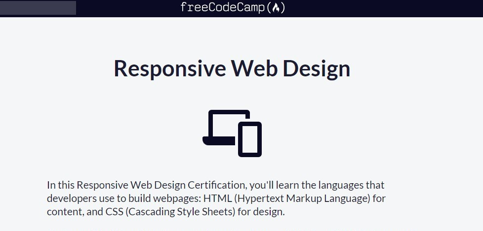

Learning HTML with FreeCodeCamp
Learning HTML with FreeCodeCamp: Your First Step into Web Development and why this course is perfect for learning HTML
FreeCodeCamp offers a comprehensive and engaging course that serves as an excellent introduction to HTML, making it accessible for beginners and a refreshing resource for those looking to brush up on their skills.
What to Expect from the HTML Course
FreeCodeCamp’s HTML curriculum is designed to be interactive and hands-on. You’ll start with the basics, learning how to structure a web page using various HTML elements like headings, paragraphs, links, and lists. The course provides a clear understanding of the syntax and semantics of HTML, allowing you to create well-structured documents. One of the standout features of FreeCodeCamp is its project-based approach. As you progress, you’ll have the opportunity to apply what you’ve learned by building real projects. This not only reinforces your understanding but also helps you create a portfolio of work that showcases your new skills. Projects include creating a personal portfolio page, a survey form, and even a tribute page, which all serve to solidify your understanding of HTML.
Interactive Learning Experience
The interactive coding environment allows you to write and test your HTML code in real-time. This immediate feedback is invaluable as you learn, helping you identify and correct mistakes as you go. Additionally, FreeCodeCamp’s well-structured lessons are supplemented with detailed explanations and examples, making complex concepts easier to grasp.